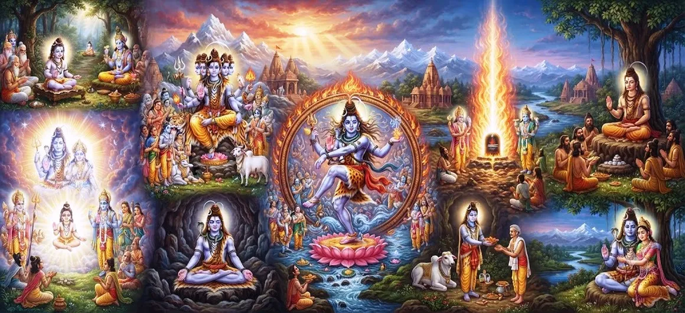

महेश के अवतार और कहानी
शतरुद्र संहिता का अध्याय 21 दिव्य अभिव्यक्ति की ओर मुड़ता है और महेश की पवित्र कथा, एक और गौरवशाली अभिव्यक्ति को प्रकट करती है भगवान शिव की सर्वोच्च शक्ति.
कथा महेश को एक अभिव्यक्ति के रूप में प्रस्तुत करती है जिसका स्वरूप और कर्मों का गहरा दिव्य उद्देश्य होता है। कथा के माध्यम से बताया गया माहात्म्य महादेव, भक्ति की शक्ति, और परमात्मा द्वारा दी गई सुरक्षा केंद्रीय विषय बनें.
कहानी भक्तों को बाहरी घटनाओं से परे देखने के लिए आमंत्रित करती है अवतार लेना और उसके माध्यम से व्यक्त आध्यात्मिक सिद्धांतों को पहचानना शिव की दिव्य अभिव्यक्तियाँ.
अध्याय 21 की मुख्य बातें
महेश अवतार
की अभिव्यक्ति के रूप में महेश की दिव्य अभिव्यक्ति का अन्वेषण करता है भगवान शिव की सर्वोच्च शक्ति.
ईश्वरीय उद्देश्य
शिव के इस रूप में प्रकट होने के पीछे के पवित्र उद्देश्य को प्रकट करता है महेशा का.
पवित्र आख्यान
महेश और उनके परमात्मा से जुड़ी महत्वपूर्ण घटनाओं का अनुसरण करता है उपस्थिति.
भक्ति की शक्ति
के प्रति सच्ची भक्ति और श्रद्धा के महत्व पर जोर देता है भगवान शिव.
दैवीय सुरक्षा
शिव की करुणा के सुरक्षात्मक आयाम को दर्शाता है अभिव्यक्तियाँ
आध्यात्मिक अंतर्दृष्टि
पाठकों को इसके पीछे के गहरे आध्यात्मिक अर्थ को पहचानने के लिए प्रोत्साहित करता है दिव्य अवतार.
इस अध्याय में मुख्य विषय
महेश अवतार का परिचय
इक्कीसवाँ अध्याय शिव के पवित्र वृतांत को जारी रखता है महेश को एक और दिव्य अभिव्यक्ति के रूप में प्रस्तुत करके अभिव्यक्तियाँ सर्वोच्च भगवान.
महेशा नाम ही महानता और संप्रभुता को दर्शाता है महादेव से सम्बंधित. इस अभिव्यक्ति के माध्यम से, कथा उपयुक्त रूपों में प्रकट होने की शिव की क्षमता की ओर ध्यान आकर्षित करता है विशेष दैवीय उद्देश्य.
इसलिए महेश को एक अलग शक्ति के रूप में नहीं समझा जाना चाहिए शिव, लेकिन एक अभिव्यक्ति के रूप में जिसके माध्यम से वही सर्वोच्च परमात्मा पवित्र आख्यान के भीतर चेतना सुलभ हो जाती है।
महेश की दिव्य अभिव्यक्ति
शिव के अवतारों का वर्णन उनके दिव्य उद्देश्य के माध्यम से किया गया है, स्वरूप, कार्य और ब्रह्मांडीय व्यवस्था के साथ संबंध। द महेश की अभिव्यक्ति परमात्मा के इस व्यापक स्वरूप से संबंधित है रहस्योद्घाटन.
महेश स्वरूप में शिव की महिमा समाहित है जुड़े प्राणियों का मार्गदर्शन और सुरक्षा करने का दयालु उद्देश्य दिव्य आख्यान के साथ.
इसलिए अवतार एक अनुस्मारक के रूप में कार्य करता है कि सर्वोच्च भगवान सार रूप में एक रहकर स्वयं को अनेक रूपों में प्रकट कर सकता है।
अवतार का उद्देश्य
पवित्र आख्यानों में दैवीय अवतारों को कभी भी प्रस्तुत नहीं किया जाता है अर्थहीन दिखावे. वे किसी विशेष के संबंध में उत्पन्न होते हैं आध्यात्मिक, लौकिक, या सुरक्षात्मक उद्देश्य।
महेश की अभिव्यक्ति से शिव के दयालु आयाम का पता चलता है दिव्य गतिविधि. भगवान ब्रह्मांडीय व्यवस्था की जरूरतों का जवाब देते हैं सारी सीमाओं से परे रहते हुए.
इस प्रकार यह कहानी भक्तों को न केवल दैवीय हस्तक्षेप देखना सिखाती है एक असाधारण घटना के रूप में, लेकिन एक बड़े आध्यात्मिक क्रम के हिस्से के रूप में।
महेश की पवित्र कहानी
महेशा की कथा निरंतर जारी श्रृंखला के एक भाग के रूप में सामने आती है शिव की दिव्य अभिव्यक्तियाँ. प्रभु की उपस्थिति एक सृजन करती है पवित्र सेटिंग जिसमें दिव्य अधिकार और आध्यात्मिक उद्देश्य बन जाते हैं क्रिया के माध्यम से दिखाई देता है।
कहानी तब भी परमात्मा को पहचानने के महत्व पर जोर देती है सर्वोच्च एक विशेष अभिव्यक्ति के माध्यम से प्रकट होता है। बाहरी रूप बदल सकता है, लेकिन दिव्य स्रोत वही रहता है।
महेश के माध्यम से, कथा शिव का एक और उदाहरण प्रस्तुत करती है पवित्र विश्व के प्रकट होते इतिहास में उपस्थिति।
महेश और भक्ति की शक्ति
शिव के अवतारों की समझ के लिए भक्ति केंद्रीय है। भगवान की दिव्य प्रकृति की पहचान एक की सुनवाई को बदल देती है आध्यात्मिक अभ्यास में पवित्र कथा।
महेश की कहानी भक्तों को श्रद्धा विकसित करने के लिए प्रोत्साहित करती है, अपने जीवन में विनम्रता, आस्था और शिव का स्मरण।
सच्ची भक्ति बाहरी आख्यान को आंतरिक कथा बनने की अनुमति देती है आध्यात्मिक समझ की ओर यात्रा.
दैवीय संरक्षण और अनुग्रह
शिव की अभिव्यक्तियों में आवर्ती विषयों में से एक दिव्य है सुरक्षा. भगवान की उपस्थिति व्यवस्था को बहाल कर सकती है, आध्यात्मिकता को दूर कर सकती है बाधाओं, या धर्म से जुड़े लोगों की रक्षा करें।
इसलिए महेशा की कहानी को अभिव्यक्ति के रूप में माना जा सकता है आध्यात्मिक व्यवस्था पर भगवान की दयालु संरक्षकता।
ऐसी सुरक्षा अंततः अस्थायी सुरक्षा से परे की ओर इशारा करती है महादेव में आध्यात्मिक शरण.
महेश का आध्यात्मिक महत्व
महेश का गहरा महत्व उस परमात्मा की पहचान में निहित है चेतना तक कई पवित्र रूपों के माध्यम से पहुंचा जा सकता है। प्रत्येक अभिव्यक्ति शिव की महिमा में एक अलग द्वार प्रदान करती है।
एक भक्त के लिए, कहानी दिव्य उपस्थिति पर ध्यान बन जाती है, समर्पण, अनुशासन और आध्यात्मिक की निरंतर संभावना जागृति.
इस प्रकार महेश एक और बिंदु का प्रतिनिधित्व करता है जिसके माध्यम से अनंत महिमा होती है महादेव का चिंतन किया जा सकता है।
शिव की अभिव्यक्ति के रूप में महेश
शतरुद्र संहिता में वर्णित अनेक अवतारों का वर्णन नहीं होना चाहिए प्रतिस्पर्धी दिव्य पहचान के रूप में समझा जाना चाहिए। वे इसका खुलासा करते हैं शिव की अभिव्यक्तियों की अपरिमेय सीमा।
महेशा इस बड़ी एकता से संबंधित हैं। इसलिए उनकी कहानी मजबूत होती है केंद्रीय शैव की समझ है कि कई रूप वापस की ओर इशारा करते हैं एक सर्वोच्च भगवान.
अभिव्यक्तियों के पीछे की एकता पर विचार करने से भक्तों को मदद मिलती है शिव के प्रति व्यापक और गहन दृष्टिकोण विकसित करें।
महेश की कहानी से सबक
यह कहानी भक्तों को ईश्वरीय व्यवस्था में विश्वास बनाए रखने के लिए भी प्रोत्साहित करती है जब परिस्थितियाँ कठिन या भ्रमित करने वाली लगें।
यह यह भी सिखाता है कि दैवीय शक्ति केवल विनाशकारी नहीं है ज़ोरदार. शिव की शक्ति मार्गदर्शन, करुणा, के माध्यम से भी प्रकट हो सकती है सुरक्षा, और आध्यात्मिक रहस्योद्घाटन।
इसलिए महेश को याद करना भक्ति को गहरा करने का निमंत्रण बन जाता है ज्ञान और आंतरिक परिवर्तन की तलाश करते हुए।
विष्णु के पुत्रों की कथा में परिवर्तन
महेशा का वृतांत आगे बढ़ने में एक और महत्वपूर्ण चरण बनता है शतरुद्र संहिता के भीतर दिव्य अभिव्यक्तियों का क्रम।
महेश की अभिव्यक्ति और कहानी पर विचार करने के बाद, कथा विष्णु के पुत्रों और आसपास की घटनाओं की ओर बढ़ती है निम्नलिखित अध्याय में वर्णित परिस्थितियाँ।
यह प्रगति शिव की दिव्यता की व्यापक खोज को जारी रखती है अभिव्यक्तियाँ और प्रकट होने वाली पवित्रता के साथ उनका संबंध कथा.
अध्याय 21 की मुख्य शिक्षाएँ
दिव्य अभिव्यक्ति
शिव कई पवित्र अभिव्यक्तियों के माध्यम से अपनी सर्वोच्च शक्ति प्रकट करते हैं।
आस्था
भक्ति ईश्वरीय व्यवस्था में दृढ़ विश्वास को प्रोत्साहित करती है।
सुरक्षा
शिव की अभिव्यक्तियाँ दैवीय संरक्षकता और अनुग्रह को व्यक्त करती हैं।
आध्यात्मिक एकता
अनेक अभिव्यक्तियाँ अंततः एक सर्वोच्च शिव को प्रकट करती हैं।
आंतरिक परिवर्तन
पवित्र कथाएँ आंतरिक आध्यात्मिक विकास की दिशा में एक मार्ग बन सकती हैं।
ईश्वरीय कृपा
महेश का स्मरण महादेव की कृपा के प्रति समर्पण की प्रेरणा देता है।
आध्यात्मिक चिंतन
महेश की कहानी भक्त को रहस्य पर चिंतन करने के लिए आमंत्रित करती है शिव की अनेक अभिव्यक्तियाँ। परमेश्वर प्रकट हो सकते हैं भिन्न-भिन्न दिव्य रूप, फिर भी प्रत्येक अभिव्यक्ति का स्रोत बना रहता है एक. इसलिए महेश एक अनुस्मारक बन जाता है कि दिव्य उपस्थिति हो सकती है जब भी पवित्र आदेश की आवश्यकता हो तब प्रकट हों। सुनकर और इस कथा का श्रद्धापूर्वक मनन करके साधक आगे बढ़ सकता है बाहरी कहानी और आस्था के बारे में गहरे सबक खोजें, समर्पण, सुरक्षा, दैवीय कृपा और आध्यात्मिक जागृति।
अध्याय 21 का संदेश जीना
महेश के संदेश को कायम रखकर दैनिक जीवन में लाया जा सकता है अनिश्चितता के समय में शिव में विश्वास। अनुमति देने के बजाय आंतरिक संतुलन को नष्ट करने के लिए कठिनाइयाँ, भक्त इनका उपयोग कर सकते हैं धैर्य, प्रार्थना और आध्यात्मिक चिंतन के अवसर।
अध्याय विनम्रता को भी प्रोत्साहित करता है। दैवीय शक्ति हमेशा नहीं होती मनुष्य जिस तरह से अपेक्षा करता है, और आध्यात्मिक ज्ञान के अनुसार स्वयं को प्रकट करें शिव एक साधक का मार्गदर्शन कैसे कर सकते हैं, इसके लिए कई तरीकों के प्रति खुलेपन की आवश्यकता है।
इसलिए महेश को याद करना एक सरल दैनिक अभ्यास बन सकता है महादेव में भक्ति, स्मरण, समर्पण और विश्वास।
प्रमुख आध्यात्मिक अवधारणाएँ
भगवान शिव की एक दिव्य अभिव्यक्ति और अभिव्यक्ति।
सर्वोच्च भगवान शिव, दिव्य अभिव्यक्तियों का स्रोत।
किसी पवित्र उद्देश्य के लिए प्रकट होने वाली दिव्य अभिव्यक्ति।
परमात्मा की ओर निर्देशित प्रेमपूर्ण भक्ति और श्रद्धा।
ईश्वरीय कृपा और दयालु आशीर्वाद।
शिव के माध्यम से सर्वोच्च आध्यात्मिक सिद्धांत का प्रतिनिधित्व किया गया।
अध्याय सारांश
शतरुद्र संहिता अध्याय 21 अवतार और पवित्र प्रस्तुत करता है महेश की कथा, भगवान की व्यापक खोज को जारी रखती है शिव की दिव्य अभिव्यक्तियाँ. अध्याय में महेश पर जोर दिया गया है उसी परम शिव की अभिव्यक्ति जो अनेक रूपों में प्रकट होता है ईश्वरीय उद्देश्य के अनुसार. उनकी कथा भक्ति को प्रोत्साहित करती है, विनम्रता, विश्वास, दैवीय संरक्षण की मान्यता, और आध्यात्मिक प्रतिबिंब. यह अध्याय भक्तों को भिन्न परमात्मा की भी याद दिलाता है अभिव्यक्तियों को अंततः एकता के भीतर ही समझा जाना चाहिए सर्वोच्च भगवान. इसके बाद कथा आगे के लिए रास्ता तैयार करती है अध्याय, जो विष्णु द्वारा उत्पीड़न के विवरण की ओर मुड़ता है बेटे.
अक्सर पूछे जाने वाले प्रश्न
①शतरुद्र संहिता अध्याय 21 का मुख्य विषय क्या है?
यह अध्याय महेश के अवतार और पवित्र कहानी को प्रस्तुत करता है, भगवान शिव का एक और दिव्य स्वरूप।
② महेश कौन है?
महेश को भगवान शिव के दिव्य स्वरूप के रूप में प्रस्तुत किया जाता है, महादेव की सर्वोच्च शक्ति का एक और पहलू व्यक्त करना।
③ महेश का आध्यात्मिक महत्व क्या है?
महेश की अभिव्यक्ति भक्तों को याद दिलाती है कि सर्वोच्च भगवान ऐसा कर सकते हैं मूलत: एक रहते हुए भी अनेक रूपों में प्रकट होते हैं।
④ महेश की कहानी भक्तों को क्या सिखाती है?
यह विश्वास, विनम्रता, भक्ति, आध्यात्मिक चिंतन को प्रोत्साहित करता है। दैवीय सुरक्षा की पहचान, और शिव की कृपा के प्रति समर्पण।
⑤ अध्याय 21 अध्याय 22 से कैसे जुड़ता है?
अध्याय 21 महेश से संबंधित कथा को समाप्त करता है और तैयार करता है अध्याय 22 का क्रम, जो उत्पीड़न से संबंधित है विष्णु के पुत्र.
"महादेव के अनेक रूप एक दिव्य उपस्थिति को प्रकट करते हैं जो मार्गदर्शन करती है, आत्मा की रक्षा करता है और उसे जागृत करता है।”
शतरुद्र संहिता के माध्यम से जारी रखें
अध्याय 21 महेश के अवतार और पवित्र कहानी प्रस्तुत करता है। उत्पीड़न की कहानी जानने के लिए अध्याय 22 को जारी रखें विष्णु के पुत्र.